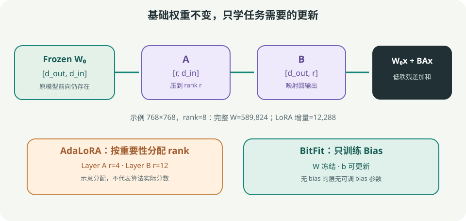

1. 下游任务往往不需要修改全部预训练权重
标准 full fine-tuning 让 BERT Encoder 中可训练的 embedding、attention、FFN、LayerNorm 等参数都更新。在一个公司同时服务几十种任务时，每个任务保存一整套模型增加存储和发布复杂度。参数高效微调（PEFT）的基本问题是：能否冻结大部分预训练参数，只训练少量任务特有的更新？
这并不意味着总前向计算消失了。冻结权重仍须参与预测；为了对较早层的 adapter 求梯度，反向图仍可能跨越 frozen 主干的某些算子。PEFT 首先节省可训练权重、梯度及优化器状态，是否减少训练峰值显存、计算和推理 latency，需要具体测量。
2. LoRA：不是低秩重建 W，而是低秩表示 ΔW
设一个线性层原始权重 W₀∈R[d_out,d_in]，输入向量 x 为 [d_in]。LoRA 冻结 W₀，把任务更新写成两个小矩阵的乘积：A∈R[r,d_in]、B∈R[d_out,r]，r 远小于两个维度。训练目标只更新 A、B（与可能额外训练的任务 head），而不是要求 BA 近似整个 W₀。
这是原始 LoRA 常用的 α/r 缩放约定。若原层权重 768×768，rank r=8，矩阵更新从 589,824 个权重压缩为 8×768+768×8=12,288 个可训练增量权重，只有指定线性层的约 2.08%。这是一个线性层的账本，不能当作整模型 LoRA 训练参数占比；任务头、bias、embeddings 和所选 target modules 仍需另外统计。
初始化常令 B=0、A 随机，使一开始 BA=0，模型与原 checkpoint 的前向一致。注意不能把 A、B 全部初始化为零，否则此参数化的两个因子会同时没有有效的初始梯度。具体初始化策略以库版本和 adapter 配置为准。
3. 在哪些层插 LoRA，需要做任务级对照
Transformer 有 Q、K、V、attention 输出投影和 FFN 两组矩阵，LoRA 可以覆盖其中一个或多个。原始 LoRA 论文在多个 Transformer 任务上研究了对 attention 投影的更新；但“所有 BERT 都只在 Q,V 上插入就最佳”不是可迁移结论。中文 NER 可能与句分类需要不同 adapter rank 与 target_modules 配置。
权重与矩阵约定也有坑：PyTorch nn.Linear(in,out) 的权重是 [out,in]；在某些 GPT 等实现的 fused projection 中存储方向与 nn.Linear 不同。看到 W=AB 或 W=BA 要检查是左乘列向量还是右乘行向量，不能仅凭文字排列反推代码 shape。

4. AdaLoRA：rank 不是一定平均分配给每个矩阵
传统 LoRA 常给每个受适配的矩阵固定 r。但不同层对下游任务的重要性未必相同。AdaLoRA（Zhang et al., ICLR 2023）用 SVD-inspired 的增量参数化，将每个可分解分量视作一个可打分的 triplet，并以敏感性/重要性评估动态分配总 rank 预算。
它不是每个训练步对完整预训练 W₀ 运行一次昂贵的精确 SVD；使用可训练的分解组件和重要性更新，在指定 warmup、预算递减日程下逐步裁掉不重要分量。要正确复现，必须记录 target_r、init_r、total_step、开始/结束预算调整步数以及重要性得分策略。不同目标层最后可能得到不同的有效 rank。
不要把“动态 rank”误说成每个 mini-batch 都在可变的全秩矩阵上自由增长，也不要假设少量可训练参数就无代价：重要性统计、rank mask、额外正交约束和调度本身也有训练开销。
5. BitFit：只改 bias，为什么也能适配任务
BitFit（Ben Zaken et al., ACL 2022）选择冻结预训练的权重矩阵，更新模型原有的 bias 参数和必要的任务头。相比 LoRA，它通常不向线性层注入 A、B 新矩阵，所以训练参数预算极小；但它对架构中究竟是否存在 bias 非常敏感。
如果某个现代 Encoder 设计刻意移除了大部分 bias，则“只调 bias”几乎没有可训练自由度，不能直接照搬 BERT-base 的经验。BitFit 原论文尤其讨论 small-to-medium training data 条件下的竞争力，不意味着大规模领域适配或所有下游任务都会优于 full fine-tuning。
还需显式决定 LayerNorm 的 bias 是否参与训练、任务分类头是否完全训练、word embedding 是否冻结，以及优化器是否意外把 frozen 参数放进更新组。
6. 把三种方案放到同一个参数预算表里
| 方法 | 可训练主体 | 主要收益 | 常见风险 |
|---|---|---|---|
| Full tuning | 全部允许的预训练权重+任务头 | 自由度最大 | 梯度、优化器状态和多任务存储大 |
| LoRA | 指定矩阵的 A/B + 可选 head | 任务 adapter 易于单独保存 | rank、作用层及合并规则不当 |
| AdaLoRA | 按预算动态分配的低秩分量 | 非均匀利用参数预算 | 重要性与调度复杂、训练不稳定 |
| BitFit | bias + 可选 head | 极低可训练参数 | 无 bias 架构难以直接适用 |
如果输出 head 含较大参数量，统计“adapter 占比”要说明是否包含 head。实践中要同时检查 requires_grad 参数数、实际 optimizer param groups、optimizer states 的字节数、总峰值显存及固定步数吞吐。多个 LoRA adapter 可各自存储/切换；但共享 base checkpoint 的版本必须严格配套。
7. 推理时能否把 LoRA 合并进原矩阵
在普通线性层且没有阻止等价转换的训练态随机组件时，LoRA 增量 ΔW=(α/r)BA 可以预先加到基础权重里，得到推理权重 W'=W₀+ΔW。合并后不必再为该线性层执行单独的 A/B 两次 matmul，但实际总延迟仍要检查整个 Encoder 和 runtime。
合并后应对固定输入检查合并前后 logits 在规定容差内一致，特别是在 FP16/BF16、INT8 或共享权重情况下。若基座已量化，直接在整数权重上做 FP 更新可能不具备相同算术语义，需要专门支持量化 adapter 的实现。发布时记录 base revision、adapter checksum、target_modules 和 tokenizer。
8. 交互：你究竟在节省哪一项
固定教学线性层的输入与输出维度都为 768，比较三种微调自由度。数字只表示单层权重与增量大小。
固定 d_in=d_out=768
Full fine-tuning 单层 W：768 × 768 = 589,824 个可训练权重。 模型还包含其它层、embedding、bias 和任务 head；此处只记一层矩阵。 基础权重本身仍须执行前向计算。
9. PEFT 的质量比较需要怎样设计
统一基础 checkpoint、tokenizer、训练/验证/测试数据及超参数搜索预算。在相同任务 head、batch、学习率扫描和训练 token 数下比较 full、LoRA、AdaLoRA、BitFit 的效果；适配器会改变有效超参数，不能把 full tuning 的最优 learning rate 直接照搬。
对小样本任务做多随机种子重复；报告平均和标准差、少数类的 F1 或 AUPRC、延迟和显存。论文关于训练参数占比或特定 GLUE 任务提升都是条件化实验观察；只有在同一数据与硬件合同下才有实际选型意义。
关键结论
- LoRA 冻结基础 W₀，学习低秩增量 (α/r)BA；可训练参数为 r(d_in+d_out) 而非整层 d_in×d_out。
- AdaLoRA 按重要性重新分配 rank 预算；BitFit 只更新已有 bias 和必要任务头。
- PEFT 主要降低可训练参数、梯度与优化器存储，不等于前向 FLOPs 同比例减少；合并推理需做数值回归。
论文与官方代码
- Hu et al., LoRA: Low-Rank Adaptation of Large Language Models, arXiv:2106.09685, §3–5
- Zhang et al., AdaLoRA: Adaptive Budget Allocation for Parameter-Efficient Fine-Tuning, ICLR 2023, §3
- Ben Zaken et al., BitFit, ACL 2022, §2–4
- Microsoft LoRA 官方 loralib
- Hugging Face PEFT AdaLoRA settings and rank schedule